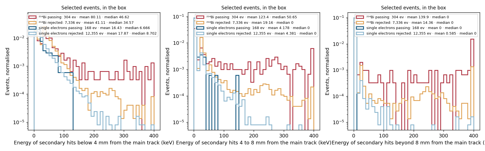
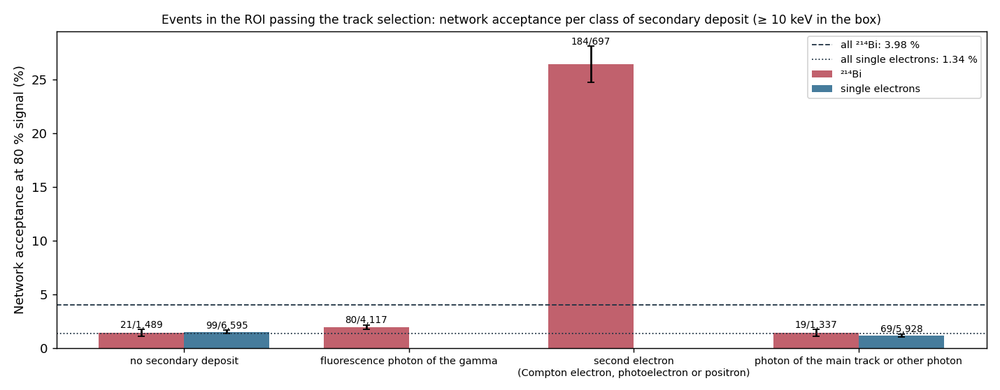
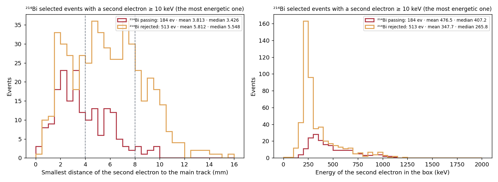
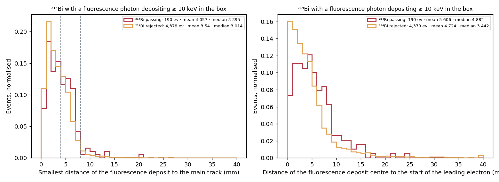
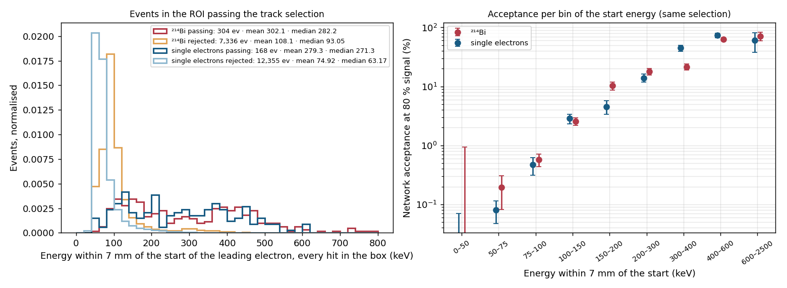
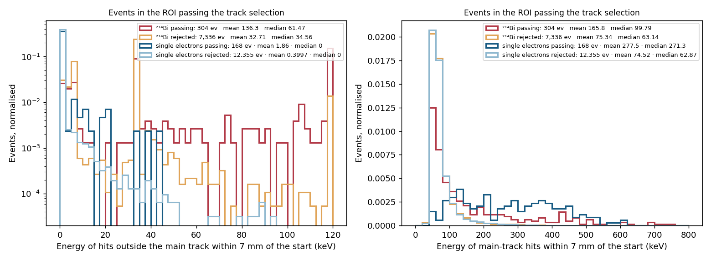
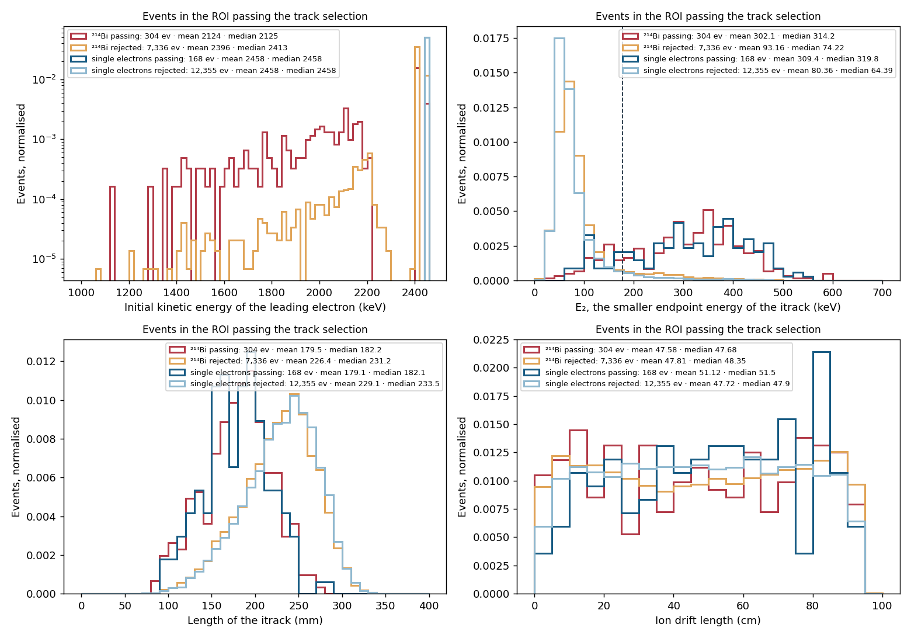

Conclusion
- Of the 304 passing ²¹⁴Bi events, 184 (61 %) have a second electron of ≥ 10 keV in the box: the gamma scattered (Compton) and was then absorbed, and the two electrons lie within about 15 mm of each other, so the track selection keeps them as one itrack. These events are 9.1 % of the selected ²¹⁴Bi and pass at 26.40 ± 1.67 % (184 of 697); the E₂ cut accepts 73 % of them, close to the 80 % of the signal: two electrons from nearby points look like bb0nu. In 173 of the 184 passing ones the leading electron is the Compton electron (median 2016 keV): the gamma scattered at a large angle and the scattered photon, of a few hundred keV, was absorbed within about 1 cm.
- They make 87 % of the excess over the single-electron acceptance (175 of 202 events). The acceptance falls with the distance of the second electron: 41.42 ± 3.01 % (111 of 268) below 4 mm, 20.98 ± 2.33 % (64 of 305) at 4–8 mm, 7.26 ± 2.33 % (9 of 124) beyond.
- Events absorbed without Compton scattering pass at 1.73 ± 0.16 % (120 of 6,943), against 1.34 % for single electrons. Without a fluorescence photon they pass as single electrons (1.31 ± 0.23 % (33 of 2,510)); with the photon absorbed within 4 mm of the main track, sharing its cells, 2.18 ± 0.28 % (61 of 2,800). The merged fluorescence photon is a small effect.
- Weighting the single-electron acceptance per bin of the energy within 7 mm of the start of the leading electron with the ²¹⁴Bi distribution of that energy gives 4.47 ± 0.28 %, against the 3.98 % measured: the network accepts events with energy near the start of the track, from a second electron, a fluorescence photon or the track folding back, and responds to it in about the same way in both samples. Passing single electrons and passing photoelectric events have a compact main track whose start region holds a large energy.
- The second electrons below 4 mm (111 of the passing events) touch the main track within one or two cells and cannot be separated on the 3 mm lattice. Those at 4–8 mm and beyond (73 events) start at a point separate from the main track; training against ²¹⁴Bi, or a feature giving the number of track ends or the separation of the two starts, could address them.
Samples
²¹⁴Bi: the 7,640 events in the ROI passing the track selection, all scored by the network itrack_sparse_e100. Single electrons: the 12,523 test events of its training (the same selection). Passing: score above 3.231, the threshold for 80 % of the bb0nu test events. E₂ cut: E₂ above 177.7 keV, the threshold for 80 % of the signal.
| Sample | network at 80 % signal | E₂ > 178 keV (80 % signal) |
|---|---|---|
| ²¹⁴Bi | 3.98 ± 0.22 % (304 of 7,640) | 11.78 ± 0.37 % (900 of 7,640) |
| single electrons (test events of the training) | 1.34 ± 0.10 % (168 of 12,523) | 6.32 ± 0.22 % (792 of 12,523) |
| ²¹⁴Bi expected from its start energy, with the single-electron acceptance per bin | 4.47 ± 0.28 % | 12.55 % |
Method
- Read the Geant4 hits (reduced hit table, mm, keV) and particles (NEXUS
MC/particles) of every event. - Main track as in the production: the leading electron (for ²¹⁴Bi the most energetic electron produced directly by the gamma; for single electrons the generated one) and its descendants not passing through a photon.
- Secondary deposit: a particle produced directly by the gamma, or a photon emitted by the main track, with its descendants. Its distance to the main track is the smallest distance of its hits to a main-track hit (Geant4 steps of at most 1 mm).
- Energies are summed inside the simulated box of the event (main track and gamma deposits inside the 160 mm frame, with a 20 mm margin). The box energy recomputed from the hits equals the production value for every event (largest difference 0 keV).
- Start energy: energy of the hits within 7 mm (the blob radius) of the creation point of the leading electron.
- Classes: a deposit counts when it has ≥ 10 keV in the box (the deposit threshold of the track selection). The relaxation electrons and the local energy of the gamma at the absorption point are always at the start of the photoelectron and are not counted as deposits.
Code: scripts/iitaca/prepare_iitaca_truth.jl (truth, Hyperion), scripts/iitaca/summarize_iitaca_truth.jl (classes and acceptances), scripts/iitaca/present_iitaca_truth.py (this page).
Interaction history
| Interaction history of the gamma | ²¹⁴Bi passing | ²¹⁴Bi rejected | network acceptance |
|---|---|---|---|
| photoelectric absorption only | 120 | 6,823 | 1.73 ± 0.16 % (120 of 6,943) |
| Compton scattering(s), then photoelectric absorption | 184 | 513 | 26.40 ± 1.67 % (184 of 697) |
Main track of the four groups:
| Group | events | leading electron from Compton | leading electron (keV), mean | main-track energy (keV), mean | secondary energy in the box (keV), mean | E₂ (keV), mean | itrack length (mm), mean | start energy, 7 mm (keV), mean |
|---|---|---|---|---|---|---|---|---|
| ²¹⁴Bi passing | 304 | 56.9 % | 2124.1 | 2104.5 | 343.4 | 302.1 | 179.5 | 302.1 |
| ²¹⁴Bi rejected | 7,336 | 6.8 % | 2395.7 | 2373.2 | 74.6 | 93.2 | 226.4 | 108.1 |
| single electrons passing | 168 | 0.0 % | 2457.8 | 2437.2 | 20.6 | 309.4 | 179.1 | 279.3 |
| single electrons rejected | 12,355 | 0.0 % | 2457.8 | 2435.0 | 22.8 | 80.4 | 229.1 | 74.9 |
Secondary deposits
Fraction of events with at least one secondary deposit of ≥ 10 keV in the box by smallest distance to the main track, and mean energy of the secondary hits by their distance.
| Group | ≥ 1 secondary deposit ≥ 10 keV < 4 mm | 4–8 mm | > 8 mm | secondary energy < 4 mm (keV), mean | 4–8 mm | > 8 mm |
|---|---|---|---|---|---|---|
| ²¹⁴Bi passing | 79.6 % | 42.4 % | 7.2 % | 80.1 | 123.4 | 139.9 |
| ²¹⁴Bi rejected | 74.4 % | 26.9 % | 3.8 % | 41.1 | 19.2 | 14.4 |
| single electrons passing | 37.5 % | 6.0 % | 0.0 % | 16.4 | 4.2 | 0.0 |
| single electrons rejected | 43.2 % | 6.7 % | 0.4 % | 17.9 | 4.4 | 0.6 |
| Type of deposit ≥ 10 keV in the box (²¹⁴Bi) | in passing events | per passing event | in rejected events | per rejected event | median smallest distance, all (mm) |
|---|---|---|---|---|---|
| Compton electron | 20 | 0.066 | 48 | 0.007 | 5.6 |
| photoelectron (not leading) | 173 | 0.569 | 496 | 0.068 | 5.0 |
| relaxation electron | 50 | 0.164 | 1,141 | 0.156 | 1.0 |
| fluorescence photon | 192 | 0.632 | 4,388 | 0.598 | 3.0 |
| photon of the main track | 184 | 0.605 | 4,587 | 0.625 | 0.9 |

Acceptance per class
| Class of the event | ²¹⁴Bi: share of events | ²¹⁴Bi: network | ²¹⁴Bi: E₂ cut | single electrons: share | single electrons: network | single electrons: E₂ cut |
|---|---|---|---|---|---|---|
| no secondary deposit | 19.5 % | 1.41 ± 0.31 % (21 of 1,489) | 4.90 ± 0.56 % (73 of 1,489) | 52.7 % | 1.50 ± 0.15 % (99 of 6,595) | 6.57 ± 0.30 % (433 of 6,595) |
| fluorescence photon of the gamma | 53.9 % | 1.94 ± 0.22 % (80 of 4,117) | 5.98 ± 0.37 % (246 of 4,117) | 0.0 % | — | — |
| second electron (Compton electron, photoelectron or positron) | 9.1 % | 26.40 ± 1.67 % (184 of 697) | 73.31 ± 1.68 % (511 of 697) | 0.0 % | — | — |
| photon of the main track or other photon | 17.5 % | 1.42 ± 0.32 % (19 of 1,337) | 5.24 ± 0.61 % (70 of 1,337) | 47.3 % | 1.16 ± 0.14 % (69 of 5,928) | 6.06 ± 0.31 % (359 of 5,928) |

Second electron
²¹⁴Bi events of the class “second electron”: all of them have a Compton scattering followed by the photoelectric absorption.
| Most energetic second electron | events | share of passing ²¹⁴Bi | network acceptance | E₂ cut |
|---|---|---|---|---|
| distance 0–4 mm | 268 | 36.5 % | 41.42 ± 3.01 % (111 of 268) | 76.12 ± 2.60 % (204 of 268) |
| distance 4–8 mm | 305 | 21.1 % | 20.98 ± 2.33 % (64 of 305) | 73.44 ± 2.53 % (224 of 305) |
| distance > 8 mm | 124 | 3.0 % | 7.26 ± 2.33 % (9 of 124) | 66.94 ± 4.22 % (83 of 124) |
| energy 10–200 keV | 60 | 1.3 % | 6.67 ± 3.22 % (4 of 60) | 70.00 ± 5.92 % (42 of 60) |
| energy 200–400 keV | 415 | 27.6 % | 20.24 ± 1.97 % (84 of 415) | 77.83 ± 2.04 % (323 of 415) |
| energy 400–800 keV | 176 | 25.3 % | 43.75 ± 3.74 % (77 of 176) | 68.18 ± 3.51 % (120 of 176) |
| energy 800–2500 keV | 46 | 6.2 % | 41.30 ± 7.26 % (19 of 46) | 56.52 ± 7.31 % (26 of 46) |

Fluorescence photon
| Fluorescence photon of the gamma (photoelectric absorption only) | ²¹⁴Bi: share of events | share of passing events | network acceptance | E₂ cut |
|---|---|---|---|---|
| no fluorescence photon | 36.2 % | 27.5 % | 1.31 ± 0.23 % (33 of 2,510) | 5.06 ± 0.44 % (127 of 2,510) |
| photon with < 10 keV in the box | 4.6 % | 5.8 % | 2.22 ± 0.83 % (7 of 316) | 5.06 ± 1.23 % (16 of 316) |
| deposit < 4 mm from the main track | 40.3 % | 50.8 % | 2.18 ± 0.28 % (61 of 2,800) | 6.57 ± 0.47 % (184 of 2,800) |
| deposit 4–8 mm | 18.1 % | 15.8 % | 1.51 ± 0.34 % (19 of 1,259) | 4.85 ± 0.61 % (61 of 1,259) |
| deposit > 8 mm | 0.8 % | 0.0 % | 0.00 ± 1.72 % (0 of 58) | 1.72 ± 1.71 % (1 of 58) |

Energy at the start of the leading electron
The network and E₂ respond to the energy near the two ends of the track. The start energy of the truth separates it into main-track hits and the rest.
| Start energy (keV) | ²¹⁴Bi: share | ²¹⁴Bi: network | single electrons: share | single electrons: network |
|---|---|---|---|---|
| 0–50 | 1.4 % | 0.00 ± 0.94 % (0 of 106) | 11.4 % | 0.00 ± 0.07 % (0 of 1,427) |
| 50–75 | 20.3 % | 0.19 ± 0.11 % (3 of 1,550) | 59.5 % | 0.08 ± 0.03 % (6 of 7,452) |
| 75–100 | 39.0 % | 0.57 ± 0.14 % (17 of 2,980) | 15.4 % | 0.47 ± 0.16 % (9 of 1,927) |
| 100–150 | 25.7 % | 2.55 ± 0.36 % (50 of 1,961) | 8.1 % | 2.85 ± 0.52 % (29 of 1,016) |
| 150–200 | 4.8 % | 10.30 ± 1.58 % (38 of 369) | 2.5 % | 4.55 ± 1.19 % (14 of 308) |
| 200–300 | 3.7 % | 18.02 ± 2.28 % (51 of 283) | 2.1 % | 13.95 ± 2.16 % (36 of 258) |
| 300–400 | 3.2 % | 21.46 ± 2.61 % (53 of 247) | 0.7 % | 44.71 ± 5.39 % (38 of 85) |
| 400–600 | 1.7 % | 63.08 ± 4.23 % (82 of 130) | 0.4 % | 73.33 ± 6.59 % (33 of 45) |
| 600–2500 | 0.2 % | 71.43 ± 12.07 % (10 of 14) | 0.0 % | 60.00 ± 21.91 % (3 of 5) |


Main track

Numerical results: truth_bi214.h5 · truth_single_electrons.h5 · summary.h5.